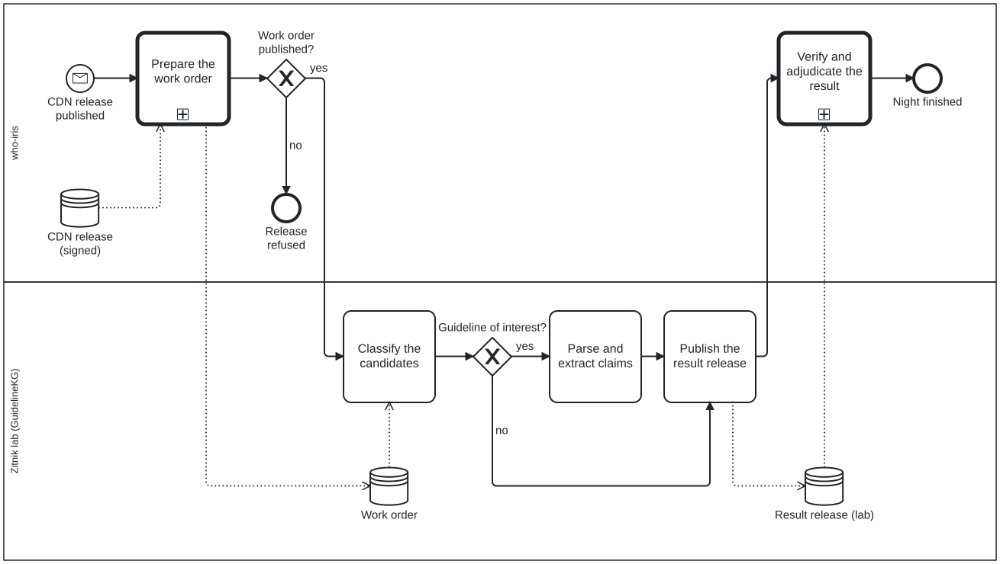
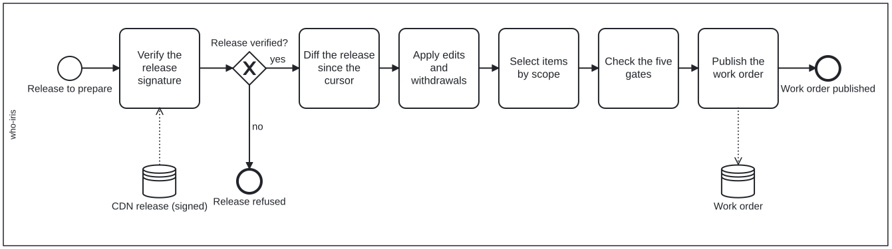
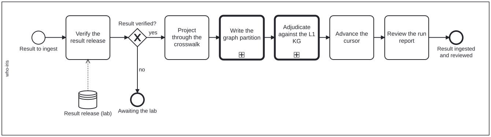
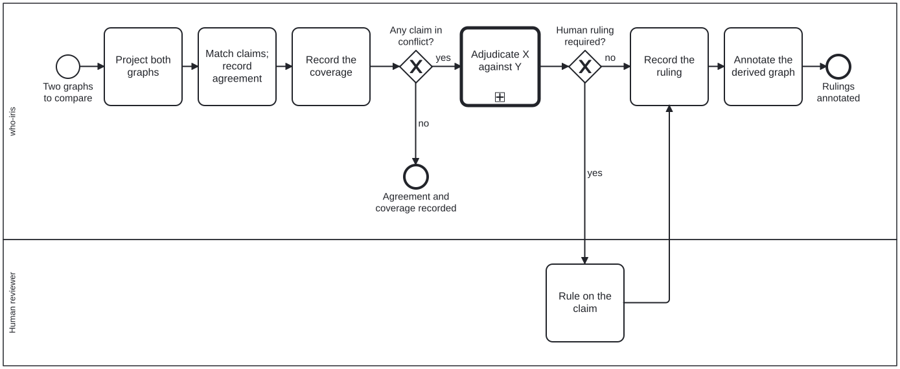

Status: exploration and design only. This document adds no code, no process files and no beans. It sets out the integration options, a recommendation, and the questions the owner needs to answer before the work items are opened. The existing L1 → KG ingestion is left exactly as it is: the new path runs beside it and never writes the files it writes.
Revised 2026-11-17, after the owner named the tool. "redacto" is Reducto, a hosted document-parsing API. The pipeline that uses it is GuidelineKG (mims-harvard/guideline-kg, private, MIT, from the same lab as OptimusKG). The owner: "That's what we will use over Optimus." GuidelineKG is Tool B throughout this document, and its own section is 3b.
Owner answers, 2026-11-17 17:29Z (relayed by the merge manager):
Section 3c is the design for both.
Owner decisions, 2026-11-17 17:31Z and 17:33Z:
Section 3d records these, and the licence-compatibility points they leave open.
Owner decisions, 2026-11-17 (answer cards and a follow-up message):
main pinned at 781a8b9, re-pinned on
each release.did:web) releases later.The owner's request, 2026-11-17 (relayed, lightly edited for typos):
need to update who-iris KG to include a new parallel KG process/tooling/skill set. The current L1 → KG ingestion should remain. We have a new one that makes use of a tool 'redacto'. It will adapt https://optimuskg.ai/ . Explore integration paths and document processes. Where outputs are related, we need to align schemas to DAK/WHO schemas. When schema aligned, then need adjudication to compare outputs of different tools. The ingestion process for the Optimus-like KG extract should pull from the nightly who-iris CDN feed to process new materials. As part of the new L1 guideline development process, the editor should describe the articles / evidence / what comprises a guideline of interest for that L1 document. This should be used to develop queries against IRIS DSpace / Dublin Core, as well as provide guidance for agentic review of a library KG (who-iris or external).
Contents
Three findings change the request as it was written. Each one is stated first because the rest of the design depends on it.
litlfred and WorldHealthOrganization organisations found nothing,
because the tool is spelled Reducto. The owner then pointed to
GuidelineKG, whose src/parser/_reducto.py wraps Reducto's Parse,
Extract and Classify APIs. Reducto is a commercial cloud service, so
every PDF it reads is sent to a third party and billed per page. The
pipeline is idempotent per PDF hash, so a re-run is not billed again.
Section 3b describes GuidelineKG; questions 1 and 10–13 in section 12 cover
what using it implies.processes/iris-cdn-nightly.bpmn
and scripts/iris-cdn/run.ts nightly produce a signed BagIt release in a git
repository on Cloudflare Artifacts, with bytes in R2. Deployment still has
open items (iris-cdn-deployment.md §Still open).
The new path should depend on the feed's contract, the verified release
and its payload manifest, and not on its run time. Then it can be built and
tested against a local release before the feed is live.A fourth point is a constraint rather than a finding. The gap is the point
(AGENTS.md). The nightly feed reports every IRIS change, and
IRIS has 273,559 items. The new path must not turn the feed into a bulk import.
It processes an item only when an L1 editor's scope of interest (section 8)
selects it, and only after the materialisation gates in
materialize-remote pass.
The current path is folio-assistant-core's library-ingestion chain. smart-base skills then write the L1 knowledge graph from what it derives. Nothing in this design edits these processes or the files they own.
| step | process (folio-assistant-core processes/library/) |
what it writes under library/<slug>/ |
|---|---|---|
| extract structure | ingest-extract-structure.bpmn |
sections/*.md, structure.json, candidates.json, OCR pages |
| derive content | ingest-derive-content.bpmn |
images.json, vector-*.json, footnotes.json, tabular CSVW |
| build the L1 KG | ingest-build-l1-kg.bpmn |
dublin-core.jsonld, manifest.jsonld, assets, glossary candidates, references/ |
| completeness gate | ingest-l1-completeness-gate.bpmn |
the check:l1-complete verdict. Its round-trip and Task_FlagDrift adjudication are the pattern section 7 reuses |
| publish statements | publish-extracted-statements.bpmn |
statement pages with source links |
| L1 KG (smart-base) | skill smart-base/extract-smart-kg-l1 |
smart-kg-l1.json, context http://smart.who.int/kg/l1.context.jsonld: nodes publication, publication-section, recommendation; edges are Statements (contains), each node with derivation and evidence{location, quote} |
| L1 library KG (smart-base) | skill smart-base/dak-l1-library |
smart-kg-l1-library.jsonld, ontology 3.0: library-node, publication-section, publication-element; edges contains, specializationOf |
Today three library entries carry smart-kg-l1-library.jsonld and two carry
smart-kg-l1.json. The existing path is section-structural and
recommendation-centred: it knows where a statement is in a publication and
that the statement is a recommendation. It does not know which disease, drug or
exposure the statement is about. That missing layer is what an OptimusKG-style
typed entity graph would add, which is why the two outputs are related but not
redundant, and why aligning them is worth the effort.
Read from the repository at commit 4fb3529 (2026-09-21), its docs site
source (docs/content/docs/), and the PyPI client
optimuskg 1.0.0 (MIT, Python ≥ 3.12).
The client describes the graph as integrating 65 resources grounded with 18
ontologies and vocabularies, with 190,531 nodes in 10 entity types and
21,813,816 edges in 26 relation types. The repository README gives slightly
different counts (192,813 nodes, 27 edge labels), so the figures depend on the
release. The paper is cited as Vittor et al., "OptimusKG: Unifying
biomedical knowledge in a modern multimodal graph", Nature Scientific Data,
2026, and is on arXiv as
2604.27269 (v3, 2026-09-01), read through
export.arxiv.org. The optimuskg.ai pages on the client, MCP bundle, nodes and
edges were supplied as PDFs (captured 2026-11-17). The counts differ a little
between sources: the paper's v3 gives 190,939 nodes, 21,818,752 edges in 27
edge types and 145 property keys.
The paper states the design choice this whole document turns on: "many [KGs] are derived from unstructured documents and therefore lack schema-level constraints". OptimusKG is built from structured and semi-structured resources instead, so its schema discipline is what to adopt for a WHO extractor. It is not a model of how to extract.
| aspect | OptimusKG | adopt for the WHO path? |
|---|---|---|
| layers | Kedro "medallion": landing → bronze → silver → gold, pure-function nodes in DAG pipelines, a dataset catalog that is the single source of truth for each schema |
Yes, the shape. landing = verified CDN bytes; bronze = Tool B's raw output; silver = grounded and normalised; gold = aligned to the WHO crosswalk, ready to adjudicate |
| determinism | version-pinned providers, checksum and quality-check hooks, reproducible runs | Yes. It matches the CDN's no-churn rule: same input, same bytes |
| grounding | BioCypher + Biolink Model; MONDO, DO, HPO, GO, Orphanet, UBERON; UMLS CUIs kept as properties; CURIE ids | Partly. Keep the BioCypher schema-config approach. Ground to WHO vocabularies first (ICD-11, ATC/INN, MeSH as IRIS already carries it, the WHO glossary), with Biolink and MONDO as skos:closeMatch bridges |
| node types | 10, each a 3-letter label: GEN 61,306, DIS 36,753, BPO 25,754, PHE 19,341, DRG 18,640, ANA 13,120, MFN 10,161, CCO 4,052, PWY 2,805, EXP 881. Ids are CURIEs: Disease MONDO:, Drug DrugBank DB…, Exposure CTD:D… (a MeSH descriptor), Gene Ensembl |
Subset. Drug, Disease, Phenotype, Exposure and Anatomy matter for WHO guidance. The molecular types are out of scope unless a scope of interest asks for them |
| edge shape | from, to, label, relation, undirected, properties; at most one edge per (from, to, label) |
Yes, plus a mandatory evidence locator (section 6) |
| provenance | sources{direct[], indirect[]} on every node and edge; evidence_score/count/index on associations |
Yes, with direct = the IRIS handle + section + page + quote |
| conflict model | relation_assertions keeps every {source, relation}; relation_conflict flags mutually exclusive ones. The current release keeps 3,826 source assertions that a priority-only collapse would drop, including 339 drug–disease pairs that are both INDICATION and CONTRAINDICATION. Its own docs warn: "For clinical or safety-sensitive analyses, read relation_assertions rather than relation alone, and treat relation_conflict = true edges as requiring source-level review" |
Yes. This is the seed of the adjudication input. It records disagreement inside one tool; section 7 extends it to disagreement between tools |
| outputs | The Parquet gold layer on Harvard Dataverse (about 280 MB): nodes.parquet, edges.parquet, the largest-connected-component versions, and per-type nodes/<type>.parquet and edges/<label>.parquet. There is also a Neo4j export. The PyPI client optimuskg downloads and caches gold files (get_file, load_parquet, load_graph(lcc=True), load_networkx). Its cache is keyed <doi_slug>/<dataset_version>/<path> and it is pinned by OPTIMUSKG_DOI / OPTIMUSKG_SERVER. An .mcpb MCP bundle builds a 2.54 GB local DuckDB and exposes list_schema, search_entities, get_entity, get_neighbors, count_neighbors, find_connection and a read-only run_sql. An agent skill is published (npx skills add https://github.com/mims-harvard/optimuskg --skill optimuskg). There is no RDF |
Parquet as the working form, then projected to N-Quads so the existing Oxigraph partitions (iris-oxigraph) can query both graphs side by side |
| evaluation | PaperQA3 scored literature support from 1 to 5 for 4,708 true edges and 1,000 false edges. The edges came from 100 seed nodes per type, with the top and bottom 10% by degree left out and up to 10 neighbours per seed. 70.0% of true edges had literature support and 83.4% of false edges had none. Unsupported true edges were mostly ANA–GEN, DIS–GEN and DRG–DRG, which come from primary experimental data | Yes, as the sampling plan for the agentic adjudication in section 7 |
| licence | code and client MIT (© 2025 Zitnik Lab). The graph is CC BY-NC-SA 4.0 on Harvard Dataverse (doi:10.7910/DVN/IYNGEV), per the paper's data-availability statement. On top of that, each source keeps its own licence: Open Targets CC0, DrugCentral CC BY-SA 4.0, CTD non-commercial |
Adapting the code patterns is clear under MIT. Using the data is not: NonCommercial and ShareAlike both apply to anything derived from it, so option D needs a legal ruling (section 12, Q5) |
Read from mims-harvard/guideline-kg at 159514a (2026-07-09; the repository
was last pushed 2026-08-28). The repository is private, licensed MIT, version
0.0.1, Python 3.13. Its README describes it as "a multimodal biomedical
knowledge graph enriched with clinical guidelines".
The pipeline is five CLI stages, joined by id / version / sha256:
| stage | what it does | external service | output |
|---|---|---|---|
scraper |
25 sources, who among them. The who scraper calls the IRIS DSpace 7 REST API (/server/api/discover/search/objects, embed=bundles/bitstreams, newest first, at most 200 × 25 items). who-seed targets a list of 1,161 WHO IRIS seeds (ISBN or title) taken from an earlier "PV database". English only: an item whose dc.language.iso is not English is skipped |
IRIS | data/guidelines/who/*.pdf + metadata.json: id, version, supersedes, sha256, source_url, page_count, title, publication_date, topic, language, extra{iris_item_uuid, bitstream_uuid} |
classifier |
single-label document type from the first ≤ 10 pages, in three groups. A, guideline family: clinical practice guideline, consensus statement, recommendation statement, guidance/advisory, guideline derivative, evidence report. B, other normative documents. C, informational. Which classes to keep is deliberately left undecided (keep_categories: null) |
Reducto Classify | data/classified/who/classify_index.json |
parser |
a typed block tree (heading, paragraph, list_item, table, figure), each block with page, bbox and OCR confidence, plus guideline metadata (title, date, organisation, region, description) |
Reducto Parse + Extract | data/parsed/who/<slug>/{parse.json, document.md, metadata.json} |
linker |
grounds a mention to an OptimusKG CURIE: embed it with text-embedding-3-large, take the cosine top j over a prebuilt index of about 190k OptimusKG nodes, and let an LLM choose |
OpenAI embeddings, Azure OpenAI, the optimuskg client |
the vector index |
integration |
an LLM extracts the guideline's own recommendations per paragraph as (subject, predicate, object, optimus_relation, population, action). The prompt excludes evidence descriptions, economics, committee process and implementation logistics. Each entity is linked, and the result is written as a layer over OptimusKG |
Azure OpenAI (JSON mode) | data/graph/guideline_kg.jsonl |
Its schema (src/integration/schema.py) is the important part for this
design:
guideline::
Guideline -HAS_SECTION-> Section -HAS_PARAGRAPH-> Paragraph -HAS_CLAIM-> Claim,
and Guideline -HAS_FIGURE/HAS_TABLE->.
Guideline carries name, publication_date, organization, region, description and length.Section carries heading and page_range.Paragraph carries text, page, bbox and ocr_confidence.Claim carries text, subject, predicate, object, status, asserted_in, last_affirmed and retracted_in.MENTIONS, DEPICTS and TABULATES run from a
content node to an OptimusKG CURIE. Each has text_span, char_start/char_end,
page, section_id, ocr_confidence and entity_linking_confidence.label is the node pair (DRG-DIS)
and relation is the native relation (INDICATION, CONTRAINDICATION,
OFF_LABEL_USE, ADVERSE_DRUG_REACTION, ASSOCIATED_WITH,
SYNERGISTIC_INTERACTION, LINKED_TO). Their properties are nature,
population, claim_id, status, asserted_in, last_affirmed and retracted_in.(subject CURIE, relation, object CURIE, population), so it is stable when
the text is reworded and across guideline versions. The store keys edges by
(from, to, relation), so an INDICATION and a CONTRAINDICATION on the same
pair stay separate. Retraction and supersession are modelled.integration validate --check-references checks every
CURIE endpoint against the OptimusKG node set.What this changes in the design:
Guideline / Section / Claim
maps almost one for one onto the L1 KG's
publication / publication-section / recommendation. GuidelineKG adds what
the L1 KG lacks: grounded entities and typed assertions. The crosswalk in
section 6 now has a concrete source schema.who scraper is a
second, unsigned and English-only route into IRIS. The integration point is
to replace that discovery with the verified CDN feed (section 5). All
downstream stages key on the PDF's sha256, and so does the CDN, so
nothing else changes. extra.iris_item_uuid is the DSpace UUID, which
joins GuidelineKG records to the who-iris catalogue.The owner's ruling puts the boundary between the two organisations, and that boundary decides the interfaces:
| side | holds | does |
|---|---|---|
| who-iris (WHO) | no Reducto, OpenAI or Azure key, ever | publishes the signed CDN release (as today); publishes a work order per night: the scope-selected handles with their bitstream digests and dc.language.iso; verifies and adjudicates what comes back |
| GuidelineKG (Zitnik lab) | the Reducto and Azure OpenAI keys, in the lab's own secret store | reads the work order and the public CDN release, verifies the release JWS against WHO's did:web key before reading a byte, runs classify → parse → integrate, and publishes a result release |
| the result release | — | guideline_kg.jsonl plus a manifest of SHA-256 digests, naming the work order, the CDN release and the GuidelineKG commit it was computed from. For now who-iris trusts it by the pinned GuidelineKG commit and the digests (owner, decided). Later the lab signs it with a key published as its own did:web, so who-iris checks it the way anyone checks a WHO release |
who-iris never calls Reducto or OpenAI and never needs network access to them.
The lab is its own lane in section 9, Zitnik lab (GuidelineKG), bound to
an external role, and the only things that cross into it are two data
stores: the work order who-iris writes and the result release the lab
writes. A night on which the lab publishes nothing is a state the
run report shows (awaiting-extractor). It is not a failure, and it never
blocks the CDN release.
The work order is the only new public artefact on the WHO side. It goes in
the CDN release history as state/guidelinekg/work-order.json beside
state/cursor.json. It is canonical JSON and changes only when the selection
changes, which keeps the no-churn rule.
IRIS publishes most translations as separate items, each with its own
dc.language.iso, ISBN and Handle. GuidelineKG's own who.py says so. Some
items instead carry several language bitstreams. The design treats a
language version as the unit and links versions into one work:
Language comes from the record, and detection checks it.
dc.language.iso from records/<handle>.json is authoritative. Script
detection on the parsed text, like GuidelineKG's relang, only checks it.
A mismatch is a finding, never a silent relabel. A multi-language item is
split per bitstream, and each bitstream's language comes from its file name
or its detected script, recorded as inferred.
Parse per language. Reducto parses each language version on its own, with the language passed as a hint where its API takes one. Whether Reducto's OCR and layout quality holds for Arabic (right-to-left) and Chinese is not verified. The baseline (bean 9) must measure it per language before any threshold is set.
Extract claims in the source language. The claim prompt is run on the
paragraph in its own language. optimus_relation is a controlled,
language-free vocabulary, so the assertion is comparable across
languages, while text, subject, object and population stay
verbatim in the source language. No machine translation sits in the
evidence chain. A translated gloss, if one is added, is a separate field
marked inferred.
Link entities across languages. The linker's index embeds OptimusKG names and synonyms, which are almost all English. A multilingual embedding gives some cross-lingual recall, but it is not enough to rely on. Add WHO's own multilingual labels to the index:
translations/).Each label is attached to the OptimusKG CURIE it maps to through the crosswalk. Every grounding records the label language it matched on, and a cross-language match carries a lower prior confidence until the baseline calibrates it.
Match the same guideline across languages. The match uses, in order of evidence:
dc.relation.*, if IRIS fills
it; not verified);dc.identifier.govdoc);(subject CURIE, relation, object CURIE) between two items, recorded as
inferred.The result is a work node with hasTranslation edges, owned by who-iris
rather than GuidelineKG, because it is a fact about the IRIS corpus.
Adjudicate like with like. Tool comparison (section 7) always compares
L1 KG and GuidelineKG on the same language version. Comparing claims
across languages is a different check: a claim present in the English
version and missing from the French one is a translation-consistency
finding. It goes to the existing round-trip translation QA lane
(ingest-l1-completeness-gate Task_RoundTrip / Task_FlagDrift), not to
tool adjudication. It is a disagreement between documents, not between
tools.
Population becomes part of the language-free key. GuidelineKG puts
free-text population into the claim id, so "pregnant women" and
"femmes enceintes" would mint two different claims. The comparison form
normalises population to a code where one exists, for example an age, sex
or pregnancy category from the DAK's core data elements, and keeps the
verbatim text beside it. Only the code enters the cross-language key.
Read at 159514a. Each item is a proposal for the lab, and none is a change
who-iris makes:
| where | today | needed |
|---|---|---|
src/scraper/sources/who.py |
skips any item whose dc.language.iso is not English |
the who-iris-cdn source takes all six languages and records language from the record |
src/scraper/prune.py, cli scraper prune-non-english |
enforces "English-only corpus by policy" | do not run it on WHO sources; or make the policy a per-source setting |
src/scraper/figures.py, --english-only |
English is the headline language | report per language (needed for the per-language baseline) |
conf/who_iris_seeds.json (1,161 seeds) |
ISBN/title seeds from an English -eng.pdf archive; title matching is ASCII-normalised |
seeds come from the who-iris work order by Handle/UUID; no title matching needed |
src/scraper/utils.py slugify |
NFKD → ASCII, so Arabic, Chinese and Russian titles all slug to guideline |
harmless for file names, which also carry the hex id. Do not use the title slug as an identity anywhere |
src/integration/schema.py slugify ([^a-z0-9]) |
the ad-hoc path (pipeline.py without a slug) turns a non-Latin title into untitled, so guideline:untitled would collide |
always pass the record's hex id or the IRIS Handle as the slug. The batch runner already passes record.guideline_id |
src/integration/claims.py prompt |
English instructions, English examples, and an English guideline subject | state that the paragraph may be in any of the six languages; extract verbatim in the source language; keep optimus_relation from the fixed list |
src/linker/* index |
OptimusKG names and synonyms (English) | add the WHO multilingual labels (ICD-11, INN, glossary translations) per CURIE, and record the matched label's language |
src/integration/schema.py claim id |
hashes free-text population |
add a normalised population code, and use it in the key when present |
| claim provenance | no language field on Claim / Paragraph |
add language (from the record) on Guideline and propagate it to Paragraph and Claim |
| what | decision | basis |
|---|---|---|
| sending IRIS PDFs to Reducto, and text to Azure OpenAI / OpenAI embeddings | permitted, on the lab's keys | owner, 17:31Z. The lab, as operator, configures the provider terms and retention (for example zero-retention or no-training settings). who-iris records which settings applied to a run only if the result release declares them |
| licence of this pipeline's outputs held by who-iris | smart-base's licence | owner, 17:33Z |
| the CDN source adapter | public; the lab may use it however it likes, including privately, provided it follows the licence terms | owner, 17:33Z |
smart-base's licence, quoted exactly from LICENSE.md at
WorldHealthOrganization/smart-base@781a8b9 (2026-10-20), first line:
Creative Commons Attribution 3.0 IGO (CC-BY-3.0-IGO)
and its licence-text paragraph:
This work is licensed under the Creative Commons Attribution 3.0 IGO (CC-BY-3.0-IGO) License.
So "cc-igo" is CC BY 3.0 IGO. It is the attribution-only variant, with no NonCommercial and no ShareAlike. Its summary says it permits adaptation "for any purpose, even commercially".
These are points for WHO's legal office, not for this design to settle.
OptimusKG inputs are CC BY-NC-SA 4.0. Both NonCommercial and ShareAlike conflict with relicensing anything adapted from OptimusKG under CC BY 3.0 IGO. The question is what in the outputs is adapted from OptimusKG:
referenced, under
its own licence, and is never materialised into a CC BY 3.0 IGO output.
Whether a CURIE plus the act of linking is an adaptation is the legal
question.Many IRIS items are themselves CC BY-NC-SA 3.0 IGO. Of the 222
catalogue records here, 78 carry dc.rights =
CC BY-NC-SA 3.0 IGO with dc.rights.holder = World Health Organization.
The rest record no dc.rights, which is unknown, not permitted.
Which licence the lab must follow when it uses the CDN source. The owner says the lab may use the CDN source "as long as they follow the licence terms". Two licences are in play:
dc.rights.who-iris itself has no LICENSE file. Stating the who-iris licence, for the adapter and for the CDN's derived files such as the catalogue records, would make "the licence terms" checkable.
| Level 1, basic | Level 2, deep | |
|---|---|---|
| applies to | every IRIS item the nightly feed reports, in all six languages | items that are L1 or L2 source documents, as selected by an editor's scope (section 8) |
| produces | a short summary of what the item is about, plus keywords | a knowledge-graph extraction that populates the L1 schema (smart-base kg/l1: publication, section, recommendation and the typed entities of section 6) or the L2 schema (the DAK components and logical models) |
| input | IRIS metadata (dc.description.abstract, dc.subject, dc.subject.mesh), plus the first pages when the abstract is missing |
the full document (GuidelineKG classify → parse → claims → linking), plus the existing L1 path |
| size held | small per item: a summary, a keyword list and their provenance. Held as a catalogue-level annotation, so the corpus shape gains a description without the corpus being held | as before: by reference, materialized only for scoped items that pass the five gates |
| runs | the Harvard lab, in GuidelineKG (owner, decided): a cheap first-pages pass, Reducto Classify plus a short LLM summary | the Zitnik lab (GuidelineKG), and the existing L1 path in parallel |
Level 1 does not contradict "the gap is the point". It adds a description to every node the catalogue models. It does not hold the items. Its keywords also feed level 2's selection: an item whose summary or keywords match an active scope becomes a candidate for deep extraction.
Level 1 must declare its own provenance. A summary is a claim by someone
(ingest-derive-content Task_Provenance), so each summary records the
model, prompt version, input pages and language. who-iris's existing
summaries.json for held entries is the same kind of artefact, and the two
must not overwrite each other.
All four options keep the existing path untouched, and all four consume the same CDN contract. They differ in where Tool B runs and where its output lives.
| option | how | for | against | |
|---|---|---|---|---|
| A | Sibling pipeline in who-iris | IRIS-specific scripts in scripts/optimus/; outputs under a new declared directory, e.g. kg-optimus/<slug>/{bronze,silver,gold}/ |
One repository, same CI, same mounts | who-iris is separation: content and tolerates IRIS-specific code only with a QA warning. A Kedro/Python extractor is far more than "a small number of tools" (owner, 2026-10-01) |
| B | A step inside ingest-build-l1-kg |
a new task after Task_Link |
No new process | Rejected. It is not parallel: it changes the process the owner said must remain, and it couples Tool B's failures to L1 completeness |
| C | External extractor, referenced KG | GuidelineKG runs from its own repository, pinned by commit. A small CDN source in GuidelineKG replaces its IRIS crawl for WHO items. who-iris holds only orchestration, the crosswalk and adjudication records, and references guideline_kg.jsonl by digest |
Clean split: code where code belongs; the gold output is a remote KG in the materialisation sense, so its subgraph metadata sits under library/<source>/ |
Two release trains to pin and keep in step |
| D | Import OptimusKG's own graph as an external library KG | subscribe to one Dataverse release as a remote KG, read through the optimuskg client pinned by OPTIMUSKG_DOI; only the node and edge files a scope needs (e.g. nodes/drug.parquet, nodes/disease.parquet and the DRG–DIS edges) are fetched, and their metadata is held under library/optimuskg/; no extraction |
Gives drug–disease grounding at once. The published MCP bundle (search_entities, get_neighbors, find_connection) is a ready-made interface for section 8's agentic review of an external library KG |
Biomedical-database facts, not WHO guidance. The data is CC BY-NC-SA 4.0, and some sources carry stricter terms. GuidelineKG's linker needs OptimusKG regardless (section 3b), so the licence ruling is needed either way |
Recommendation: C for the extractor runtime, with A's thin orchestration layer in who-iris. The parts are placed in section 10.
mims-harvard/guideline-kg, pinned by commit, and
the lab runs it with its own keys (section 3c). who-iris publishes a
work order and verifies a signed result release. It needs one addition
there: a who-iris-cdn source beside its who scraper, which reads the
work order, plus the multilingual changes listed in 3c. The source writes the same data/guidelines/who/metadata.json
records from a verified CDN release instead of crawling IRIS, putting the
IRIS Handle and UUID in extra. classifier, parser, linker and
integration then run unchanged. That is a PR to a repository who-iris
does not own (section 12, Q11).guideline_kg.jsonl) is held by reference,
referenced by default. A document's slice is materialized only where a
scope of interest selected it and the five gates passed.What the feed produces (from scripts/iris-cdn/run.ts and
iris-cdn-exporter):
bagit.txt, date-free bag-info.txt,
manifest-sha256.txt, tagmanifest-sha256.txt and its detached JWS
tagmanifest-sha256.txt.jws (ES256; key from did:web);records/<handle>.json (the canonical DC record), bitstreams/<handle>/<bundle>/<name>,
graph/<partition>, and per-item items/<handle>/manifest-sha256.txt(.jws);sha256/<aa>/<digest>;state/cursor.json is the exporter's own cursor. The new path never moves it.How the new path consumes it, as process optimus-kg-nightly (section 9):
End_Done, as a message start event. A
scheduled timer at 04:00 UTC is the fallback. A night with End_NoChange
never starts it.tagmanifest-sha256.txt.jws (the iris-cdn-signing verifier: "Resolves the
key from the DID document, never from the package"). An unverified release
is refused. That is a state, not an error to retry.state/optimus-cursor.json: the release
commit and tag-manifest digest it last finished. Use diffManifests from
scripts/iris-cdn/bag.ts to get added, changed and removed paths.records/<handle>.json changed (a metadata edit): re-ground the
publication node only. Do not re-extract, because the PDF digest did
not change (the exporter's "metadata changes and the PDF does not" rule).ORIGINAL changed: a candidate for extraction.removed, or marked withdrawn by the weekly reconciliation: mark the
derived nodes and edges withdrawn. Keep them addressable and never
delete them, mirroring the reconciliation.materialize-remote's five gates (size, restrictions,
retention, sourceLoss, copyright) for each selected bitstream.
restrictions: unknown stays unknown and is never permitted.who-iris-cdn source writes the scraper
record, and then classifier classify, parser parse and
integration build run as they do today. The work is keyed by bitstream
SHA-256 plus GuidelineKG commit plus crosswalk version. GuidelineKG
already skips any PDF whose hash has an ok record, so Reducto is never
billed twice for the same bytes. Classification runs before parsing:
a document the scope does not count as a guideline of interest is
never parsed. who-iris then verifies the lab's result release
(signature, digests, and that it names this night's work order and CDN
release) before reading it.guideline_kg.jsonl through the crosswalk (section 6) into the
comparison form, then into N-Quads in its own named-graph partition, e.g.
graph/guidelinekg/<handle>, beside the existing partitions.Task_Review in the exporter does.Both tools are projected to one comparison form before they are compared:
(subject IRI, predicate IRI, object IRI | literal,
evidence: { handle, uuid?, section id, page range, quote },
derivation: derived | inferred | extracted, tool, tool version)
WHO identifiers come first. The publication is always the IRIS item (Handle
10665/…, DSpace UUID, ISBN or govdoc). Entities are grounded to a WHO-owned
or WHO-used scheme where one exists. Other schemes link by skos:exactMatch
or skos:closeMatch, never by replacing the WHO identifier.
The DAK component names below are the nine components of a SMART Guidelines Digital Adaptation Kit. The smart-base logical-model names are given as targets to confirm: smart-base is not mounted in this checkout, so they are not verified against its pinned version (section 12, Q6).
| GuidelineKG (Tool B) | existing L1 KG (smart-base kg/l1) |
DAK component / WHO schema target | WHO grounding (primary) | bridge |
|---|---|---|---|---|
Guideline (guideline:<slug>; extra.iris_item_uuid) |
publication |
DAK L1 source; IRIS DC record | Handle, DSpace UUID, ISBN (from records/<handle>.json). The join is on the DSpace UUID, never the slug |
dcterms: |
Section (heading, page_range), Paragraph (text, page, bbox), Figure, Table |
publication-section, publication-element |
location in L1 | section id + page range. Sections are matched by normalised heading and page overlap, because the two tools split sections differently | — |
Claim (+ its assertion edge) |
recommendation |
Component 2 — Health interventions and recommendations (smart-base recommendation / health-intervention model) | the recommendation's own IRI | GRADE certainty and strength as properties |
| Disease (DIS) | — (gap: propose condition) |
Component 2 (condition targeted); Component 5 decision-support logic inputs | ICD-11 MMS URI | id MONDO:; xrefs carry ICD-10 (not ICD-11), OMIM and others, plus umls_cui. ICD-11 is reached through WHO's ICD-10→ICD-11 mapping tables, and an unmapped code stays unknown |
| Phenotype (PHE) | — (gap: propose finding) |
Component 5 — Core data elements (observation) | ICD-11 signs/symptoms chapter | HPO |
| Drug (DRG) | — (gap: propose product) |
Component 5 data elements (medication); WHO EML | ATC code + INN | id DrugBank DB…. The node schema has no ATC or INN field (it has synonyms, trade names, UNII, CAS and a MeSH mrdef), but the DRG–DIS edges list ATC and INN among their indirect sources. Mapping to ATC/INN is a separate grounding step |
| Exposure (EXP) | — (gap) | Component 5 data elements (risk factor) | ICD-11 extension codes where one exists | id CTD:D… is a MeSH descriptor, so it joins directly to IRIS's dc.subject.mesh. That is the cheapest bridge between the two graphs |
| Anatomy (ANA) | — | Component 5 (body site) | ICD-11 anatomy extension | UBERON |
| Gene, Pathway, BP/CC/MF | — | out of scope unless a scope of interest asks | — | keep referenced |
| term label / synonym | glossary candidate (folio-glossary/v1, SKOS) |
WHO glossary (glossary/) |
skos:prefLabel, notation |
skos:altLabel |
| — | — | Components 1 (personas), 3 (user scenarios), 4 (business processes), 6 (indicators), 7 (requirements), 8 (test scenarios) | not produced by either tool | the L1 editor and DAK authoring |
The "gap" rows are a proposal to smart-base: add typed entity nodes to the
kg/l1 ontology so a recommendation can be about a condition, product or
finding. Until smart-base adopts this, the gold output carries these as its own
who-iris types, with skos:closeMatch to the Biolink class. who-iris does
not extend smart-base's ontology on its own.
| GuidelineKG / OptimusKG | L1 KG / DAK target | note |
|---|---|---|
MENTIONS / DEPICTS / TABULATES (text_span, char offsets, page, section_id, entity_linking_confidence) |
evidence{location, quote} on the entity |
the locator the gold layer requires. A grounding below a confidence floor is kept and marked unknown, never dropped |
assertion population |
the recommendation's population (PICO P) | part of the claim's identity in GuidelineKG, so it must be part of the match key in section 7 |
Claim.status / retracted_in / asserted_in / last_affirmed |
dc.relation.isreplacedby chain; catalogue withdrawn |
across versions, a retraction in GuidelineKG and a supersession in IRIS should agree; a disagreement is a finding |
DRG–DIS INDICATION |
recommendation recommends (intervention for condition), strength and certainty if stated |
a guideline's recommendation is not a database indication: same pair, different claim. The comparison matches the pair, and the predicate difference is a kind finding, not a conflict |
DRG–DIS CONTRAINDICATION |
recommendation with negative direction ("do not use") |
|
DRG–DIS OFF_LABEL_USE |
no target | WHO guidance seldom states it; record and do not compare |
| DIS–PHE, DIS–EXP associations | Component 5 data-element relations | compare only within a scope that asks for them |
sources.direct |
evidence{location, quote} + wasDerivedFrom |
must resolve to the IRIS handle and a section; an edge without a locator is invalid in gold, the same "no default" rule as catalogue state |
evidence_score, evidence_count |
none in L1 | kept as Tool B properties; never mapped to GRADE certainty |
relation_assertions, relation_conflict |
block-qa entries (section 7) |
intra-tool disagreement is surfaced, not resolved by RELATION_PRIORITY |
contains (L1) |
— | structural; Tool B does not produce it. Not compared |
The crosswalk itself is data (crosswalk/optimus-l1-dak.json, versioned),
not code. Its version is part of the derivation key (section 5, step 7), so a
crosswalk change re-projects gold without re-running Tool B.
Decided by the owner: both graphs are present, and the pipeline also produces a derived graph.
| graph | maintained by | where it lives |
|---|---|---|
| the L1 KG (existing path) | who-iris and smart-base | library/<slug>/smart-kg-l1*.json* |
| GuidelineKG | the Harvard team, "at least for now" | published in the lab's own repositories; who-iris references a pinned release, never a copy |
| the derived graph | who-iris | the comparison form of section 6, with every claim annotated with which graphs assert it, how far they agree, and any ruling |
Authors of L1, L2, DAK and DTH content select from these: one graph, the other, or the derived graph filtered by agreement level ("selectivity"). So the aim is not to pick a single winner and delete the loser. Comparison annotates, and a ruling records a judgement for an author's use without removing either source. The adjudication below is the mechanism for those judgements. It runs where an author or reviewer needs a disputed claim settled, and as the sampled quality measure described below.
This reuses the harness's adjudication and does not invent another.
adjudication):
mechanical agreement (the comparison script passes), consensus (both
tools agree), and adjudicable (the two tools disagree on one claim).
A claim only one tool made is not a disagreement. It is a coverage
finding, reported but never adjudicated, as the skill says: "A missing entry
is not a disagreement."untainted-verification).
The adjudicator sees the source passage (the quote and section, read from the
library entry) and the two claims anonymised as X and Y, never which tool
made which. It uses no tools and says so (tools_used). It never sees either
tool's full graph.AGENTS.md §Translations). Each ruling is pinned by the
hashes of the two claims and the source passage, and stored on a state
branch (cat/who-iris/attestations, a new kg-adjudication/ subtree). A
re-run that reorders or drops claims needs no re-adjudication.What is compared. GuidelineKG extracts only recommendations, so the
comparison covers the L1 KG's recommendation nodes and GuidelineKG's
Claims and assertion edges, and nothing else. They are matched on
(publication by UUID, section by heading and page, grounded subject,
grounded object, population). GuidelineKG's own claim id hashes the same
fields, so its side of the match key already exists. Both sides are always
the same language version of the publication. Cross-language consistency
is a separate check (section 3c, item 6).
| metric | over | why |
|---|---|---|
| entity grounding agreement | entities both tools found in the same evidence span | the same text grounded to different ICD-11 or ATC codes is the commonest real disagreement |
| pair overlap: Jaccard; precision and recall of each tool with the other as reference | (subject, object) pairs after grounding | symmetric, and no tool is assumed to be the truth |
| predicate agreement: Cohen's κ | pairs both tools found | corrects for chance on a small label set (recommends / contraindicates / associated) |
| evidence-locator agreement | matched claims | same section and overlapping pages; a match that cites different passages is suspect |
| coverage | claims only one tool made, by type | a tool's blind spots, tracked over time; not adjudicated |
Thresholds are not proposed here. They need a baseline over real outputs and are the owner's to set (section 12, Q7).
The caller calls Process_Adjudication and declares its own codes
(<cat-harness.processes:adjudication codes="x-right y-right both-wrong both-defensible undecidable"/>).
| outcome | effect on the derived graph (both source graphs are never changed) |
|---|---|
x-right / y-right |
the supported claim is annotated adjudicated, and the other is annotated not-supported with the ruling. An author can still select either |
both-wrong |
both annotated not-supported; a bean opens if it repeats for one tool |
both-defensible |
both kept: the text supports two readings. This is common where a guideline is ambiguous, and it is a finding for the L1 editor |
undecidable |
escalated to the human reviewer lane |
Who adjudicates. An untainted agent adjudicates first. Claims of type
recommendation, and any claim about a contraindication, always go to a
human reviewer (SME or editor), the same lane as ingest-l1-completeness-gate
Task_FlagDrift. The agent's ruling is kept beside the human's, never
overwritten (human_adjudicated alongside assessed_by). Sampling: every
adjudicable recommendation-class claim is ruled on. Other types are sampled with
OptimusKG's evaluation plan (stratified by node type, true and false
neighbours, sample size from a power analysis), so cost is bounded per night.
The owner wrote "see examples below", but no examples were attached. The examples here are illustrative placeholders, which the owner has asked to keep for now.
Decided by the owner:
A default scope, its guidance and its prompting are a skill in smart-base. That skill is the baseline every new L1 or L2 document starts from.
Creating a new document includes refining that scope, not replacing it. An editor's scope extends the default: it narrows populations, adds evidence types, adds seeds and exclusions. A field the editor does not set inherits the default. A refinement that would delete a default criterion is refused, and the editor must state it as an explicit, reasoned exception.
The evidence review criteria are part of the document. The author or editor of an L1 or L2 document provides the criteria for reviewing the evidence that went into it. These are documented as part of creating the document: they are recorded with the document's own record and cited from it, not kept in a side file an agent might miss. The criteria are then actively used by the agents at both stages:
Each agent ruling cites the criterion it applied.
A new document kind, l1-scope-of-interest/v1. It is authored once per L1
document as the first step of the L1 guideline-development process, and it
belongs with the L1 document (section 10):
scope: measles-l1 # one per L1 document
l1Document: <the L1 document's id>
question: >-
What WHO guidance and evidence governs measles vaccination schedules,
outbreak response and case management?
pico:
population: [infants, children under 5, pregnant women]
intervention: [measles-containing vaccine (MCV1, MCV2), vitamin A]
comparator: [no vaccination, alternative schedule]
outcomes: [incidence, mortality, seroconversion, adverse events]
grounding: # WHO schemes first
icd11: ["1F03"] # Measles
mesh: ["Measles", "Measles Vaccine", "Vitamin A"]
atc: ["J07BD"] # measles vaccines
evidenceTypes: # GuidelineKG classifier categories (src/classifier/schema.py)
include: [clinical practice guideline, recommendation statement, consensus statement,
guidance/advisory, evidence report]
exclude: [meeting report, news/announcement, infographic, administrative]
guidelineOfInterest: # what makes an item a "guideline of interest"
- GRC-approved WHO guideline, or WHO position paper published in the WER
- contains at least one recommendation on the PICO above
- current: not superseded (dc.relation.isreplacedby, if IRIS fills it)
dates: { from: 2009-01-01 }
languages: [en, fr, es, ar, ru, zh]
regions: [global, AFRO, EMRO, SEARO] # regional offices' collections
seeds: ["10665/…"] # items the editor already knows are in
exclusions: ["10665/…"]
IRIS DSpace 7 Discovery queries. These use the endpoint and patterns
that iris-rest-feed already uses against
live IRIS. For example:
GET /server/api/discover/search/objects?dsoType=ITEM
&query=(dc.subject.mesh:"Measles Vaccine" OR dc.subject.mesh:"Measles")
AND dc.date.issued:[2009 TO *]
&sort=dc.date.accessioned,DESC&page=N&size=100
Add one query per evidence type on dc.type, and a scope={collectionUuid}
query per regional collection. The dc.type values and facet names
(f.subject, f.dateIssued, f.itemtype) that IRIS exposes are not
verified. The generator must read /server/api/discover/facets first and
refuse a field IRIS does not index rather than send a query that silently
matches nothing.
OAI-PMH harvest, if IRIS exposes it:
verb=ListRecords&metadataPrefix=oai_dc|qdc&set=<collection set>&from=<date>.
IRIS's OAI endpoint is not verified; REST stays the primary route.
A SPARQL query over the who-iris Oxigraph partitions, for items already
catalogued (dcterms:subject, dcterms:type, dcterms:issued). It is the
same query in the browser and at build time
(iris-oxigraph).
GuidelineKG's keep_categories and seeds. evidenceTypes.include
becomes the classifier's keep_categories for this scope, and seeds
become a seed file in GuidelineKG's who_iris_seeds.json shape
({query, by: isbn|title, isbn, title}). The editor's description then
drives Tool B directly, not only the IRIS queries.
The selection predicate that section 5, step 5 applies to each nightly
record. It is the same filter run locally over records/<handle>.json, so a
new item that matches an active scope is picked up the next night.
Guidance for agentic review of a library KG (who-iris or external). This
is a generated checklist that the deep-document-research process
(folio-assistant-core) runs, with the scope as the Planner's filter:
include, exclude or uncertain against the
PICO, evidence type and guideline of interest criteria, citing the
location (handle + section + page) for every ruling;seeds and exclusions, through the editor and
never automatically.A second illustrative scope, kept short: contraceptive use. Its
guidelineOfInterest is "WHO Medical eligibility criteria or Selected practice
recommendations, any edition, with the edition superseding chain resolved",
and its evidence types are [guideline, systematic review]. It shows why
a supersession field such as dc.relation.isreplacedby matters; whether IRIS
fills that field is not verified.
Processes in this repository are BPMN files in processes/.
Each activity names its skill (<bootstrap.processes:skill>), with a generated
checklist (bun run cat bpmn:checklist) and SVG (bun run cat render:bpmn).
The nightly path and the adjudication are drawn; most of their skills are
not written yet. A step whose skill does not exist carries
<cat-harness.processes:no-skill reason="Unbuilt: …"> naming the skill this
design assigns, and its documentation opens with Unbuilt (skill … not written
yet), so check:workflow-refs finds no dangling reference and the checklist
says which steps are not built. A step that is built names its skill as usual.
l1-scope-and-review is still a table only: it belongs in smart-base
(section 10).
Lanes. who-iris (role guidelinekg-path: the scripts and the agent;
holds no keys), Zitnik lab (GuidelineKG) (role guidelinekg-lab, an
external actor: GuidelineKG on the lab's own keys) and Human reviewer
(role guidelinekg-reviewer, a person). The roles are in
scenarios/roles.json. Data stores: the
CDN release (signed) and the work order (both in the Cloudflare
release history) and the lab's result release.
Following the harness's rule for diagrams past about 20 steps (bpmn-authoring,
"Split by phase"), the nightly path is a top-level diagram that shows the
hand-off between who-iris and the lab, and calls two who-iris phases.
optimus-kg-nightly (who-iris): the night, and the hand-off to the labprocesses/optimus-kg-nightly.bpmn ·
checklist

| id | lane | skill | what |
|---|---|---|---|
Start_AfterExport |
who-iris | — | message: the exporter's End_Done; timer fallback at 04:00 UTC |
Call_PrepareWorkOrder |
who-iris | phase Process_OptimusKgNightlyWorkOrder |
reads the CDN release, writes the work order |
GW_Published |
— | — | refused release → End_Refused |
Task_Classify |
Zitnik lab | guidelinekg-run (unbuilt, the lab's) |
GuidelineKG classifier classify (Reducto Classify) on the work order's documents, after verifying the release JWS against WHO's did:web key |
GW_Keep |
— | — | the class is in the scope's keep_categories; otherwise recorded, not parsed |
Task_Extract |
Zitnik lab | guidelinekg-run (unbuilt) |
parser parse then integration build, keyed by (bitstream sha, GuidelineKG commit, crosswalk version) |
Task_PublishResult |
Zitnik lab | guidelinekg-run (unbuilt) |
writes the result release |
Call_IngestResult |
who-iris | phase Process_OptimusKgNightlyIngest |
reads the result release; ends as awaiting the lab or ingested |
End_Done |
— | — | night finished |
optimus-kg-nightly-work-order (phase 1): prepare the work orderprocesses/optimus-kg-nightly-work-order.bpmn ·
checklist

| id | lane | skill | what |
|---|---|---|---|
Task_VerifyRelease |
who-iris | iris-cdn-signing |
verify the tag-manifest JWS through did:web; an unverified release ends the phase as End_Refused |
Task_Diff |
who-iris | optimus-kg-feed (unbuilt) |
diff payload manifests since state/optimus-cursor.json |
Task_ApplyMetadata |
who-iris | optimus-kg-feed (unbuilt) |
metadata-only: re-ground the publication node, no re-extraction; removed or withdrawn: mark derived claims withdrawn, keep them addressable |
Task_SelectByScope |
who-iris | l1-scope-of-interest (unbuilt) |
level 1 for every changed item; apply every active scope's selection predicate for level 2 |
Task_Gates |
who-iris | materialize-remote |
the five gates per bitstream; unknown is not permitted |
Task_WorkOrder |
who-iris | optimus-kg-feed (unbuilt) |
write state/guidelinekg/work-order.json: the selected handles, bitstream digests and dc.language.iso |
optimus-kg-nightly-ingest (phase 2): verify and adjudicate the resultprocesses/optimus-kg-nightly-ingest.bpmn ·
checklist

| id | lane | skill | what |
|---|---|---|---|
Task_VerifyResult |
who-iris | optimus-kg-feed (unbuilt) |
the result release's digests, the pinned GuidelineKG commit, and that it names this work order and CDN release; later its signature (lab did:web). Not verified, or not there: End_Awaiting (awaiting-extractor), never a failure |
Task_Crosswalk |
who-iris | kg-crosswalk (unbuilt) |
OptimusKG CURIEs → WHO schemes through their xrefs (MONDO → ICD-10 → ICD-11; DrugBank → ATC/INN; CTD MeSH → dc.subject.mesh), then silver → gold through the versioned crosswalk; an unmapped CURIE stays unknown, an edge without a locator is rejected |
Call_Partition |
who-iris | iris-oxigraph, nquads-distribution |
project gold to its named-graph partition (platform process, called) |
Call_Adjudicate |
who-iris | kg-tool-adjudication (unbuilt) |
the process below, for documents with an L1 KG |
Task_AdvanceCursor |
who-iris | optimus-kg-feed (unbuilt) |
only after a complete run |
Task_Review |
who-iris | optimus-kg-feed (unbuilt) |
run report; beans for anomalies (yield far from median, adjudication rate jump, gate unknown spike) |
kg-tool-adjudication (generic over any two extractors)processes/kg-tool-adjudication.bpmn ·
checklist. Its home is
folio-assistant-core (section 10); it is drawn here, beside its only caller,
until its skill is written.

| id | lane | skill | what |
|---|---|---|---|
Task_Project |
who-iris | kg-crosswalk (unbuilt) |
both outputs → comparison form |
Task_Match |
who-iris | kg-tool-adjudication (unbuilt) |
match entities, pairs, predicates and locators; write the agreement level onto the derived graph; compute the metrics in section 7 |
Task_Coverage |
who-iris | kg-tool-adjudication (unbuilt) |
claims only one tool made: record coverage; not adjudicated |
GW_Conflict |
— | — | no claim in conflict → End_NoConflict |
Call_Adjudication |
who-iris (untainted agent) | adjudication, untainted-verification |
Process_Adjudication, codes x-right y-right both-wrong both-defensible undecidable |
GW_Human |
— | — | recommendation-class, contraindication, or undecidable |
Task_HumanRuling |
Human reviewer | adjudication |
the human ruling, kept beside the agent's |
A_RecordEntry |
who-iris | adjudication |
attestation keyed by content hashes; relaxable="false" |
Task_Annotate |
who-iris | kg-tool-adjudication (unbuilt) |
write the ruling onto the derived graph; neither source graph changes |
l1-scope-and-review (L1 guideline development; see section 10 for where)| id | lane | skill | what |
|---|---|---|---|
Task_WriteScope |
l1-editor | l1-scope-of-interest |
author l1-scope-of-interest/v1 |
Task_ValidateScope |
build-pipeline | l1-scope-of-interest |
schema check; read IRIS facets; refuse unindexed fields |
Task_GenQueries |
build-pipeline | iris-scope-queries |
Discovery REST, OAI-PMH (if available) and SPARQL; selection predicate |
Task_RunQueries |
build-pipeline | iris-rest-feed |
candidates, by reference only |
Call_DeepResearch |
— | deep-document-research |
agentic review of who-iris or an external library KG, scope as Planner filter |
Task_EditorTriage |
l1-editor | l1-scope-of-interest |
accept rulings into seeds / exclusions; activate the scope for the nightly path |
This follows the split rules: cat-harness owns the harness (skills, workflows,
roles, tools); the content layer owns "what a folio holds, where it came from";
who-iris is separation: content and holds only IRIS-specific code, by the
owner's rulings of 2026-10-01 and 2026-10-09; WHO subject vocabulary does not go
in the platform.
| piece | home | why |
|---|---|---|
optimus-kg-nightly.bpmn, skill optimus-kg-feed, feed-consumer script |
who-iris | IRIS- and CDN-specific |
skill iris-scope-queries (scope → DSpace / DC queries) |
who-iris | IRIS field names and endpoints |
crosswalk data crosswalk/optimus-l1-dak.json |
who-iris for the IRIS-specific mappings; WHO-scheme mappings that hold outside IRIS move to smart-base later | subject vocabulary stays out of the platform |
kg-tool-adjudication.bpmn + skill, comparison-form schema, l1-scope-of-interest/v1 schema |
folio-assistant-core | content vocabulary: what a library KG holds and where it came from; generic over any two extractors and any library |
| matching and metrics code | cat-harness-tools | code; the general catalogue tools live with the platform (owner, 2026-10-09) |
Process_Adjudication, untainted-verification, attestation storage |
cat-harness (existing, reused) | no change expected; a new codes set is declared by the caller |
the default scope, guidance and prompting skill (owner, decided); typed entity nodes in kg/l1 (condition, product, finding); l1-scope-and-review in the L1 guideline-development process; DAK logical-model targets |
smart-base | it owns the L1 ontology and DAK models; proposed here, not changed here |
GuidelineKG (Reducto parse, LLM claims, OptimusKG linking), its who-iris-cdn source and the multilingual changes |
mims-harvard/guideline-kg, pinned by commit, run by the Zitnik lab on its own keys | not content, not ours, and a Python application that who-iris could not tolerate; the keys stay with the party that pays for them |
the work order, the result-release verifier, the cross-language work grouping |
who-iris | facts about the IRIS corpus and checks on what comes back |
Not created. This checkout's work-plan graph did not mount:
bun run cat state:mount reports cat/cat-harness/beans missing on this
remote. Creating beans blind would risk duplicates (beans create is not
idempotent). A search of the beans that are mounted (cat-harness-tools/beans,
folio-assistant-core/beans) for optimus, redacto, scope of interest and
extractor agreement found nothing. Whoever opens these should first search
the live work plan for the same terms.
| # | title | home | blocked by |
|---|---|---|---|
| 1 | owner | Q10–Q13 | |
| 2 | l1-scope-of-interest/v1 schema + skill; owner's examples as fixtures |
folio-assistant-core | Q8 |
| 3 | iris-scope-queries: scope → Discovery/OAI/SPARQL; read IRIS facets first |
who-iris | 2 |
| 4 | Comparison form + crosswalk v0 (section 6) and proposal to smart-base for typed L1 entity nodes | who-iris + smart-base | Q6 |
| 5 | optimus-kg-feed: verified-release diff consumer with its own cursor, tested against a local release |
who-iris | CDN contract (exists) |
| 6 | who-iris-cdn source in GuidelineKG: verified release → metadata.json records with Handle/UUID in extra; run classify → parse → integrate, keyed by sha256 |
mims-harvard/guideline-kg | Q11, 5 |
| 7 | kg-tool-adjudication process + skill + metrics; codes declared for Process_Adjudication |
folio-assistant-core + cat-harness-tools | 4 |
| 8 | optimus-kg-nightly.bpmn + checklist + SVGkg-optimus/ in who-iris.json |
who-iris | 3, 5, 6, 7 |
| 9 | Baseline run on the held library entries with an L1 KG; propose thresholds | who-iris | 8 |
| 10 | (optional) OptimusKG as an external library KG for agentic review | who-iris | licence Q5 |
| 11 | Work order + result-release contract (format, lab did:web signing, verification); awaiting-extractor state |
who-iris + the lab | Q11 |
| 12 | Multilingual GuidelineKG: the changes in section 3c's table | mims-harvard/guideline-kg | Q11 |
| 13 | Cross-language work grouping (relations, govdoc, catalogue, assertion overlap) and routing cross-language gaps to translation QA |
who-iris | 4 |
copyright gate for IRIS bitstreams fed to an
external tool?kg/l1 ontology? Version decided:
smart-base main pinned at 781a8b9, re-pinned on each release. Which
logical models to target, and the typed-entity proposal, follow from that
pin.did:web key. Original question: The who-iris-cdn source is a change to
a private repository who-iris does not own, as are the multilingual
changes (section 3c). Who agrees them with the lab? Does WHO get read
access for pinning? Will the lab sign its result releases with a key
published as its own did:web?keep_categories undecided. Should each L1 scope decide it (section 8,
recommended), or should one WHO-wide default be set?did:web releases later.